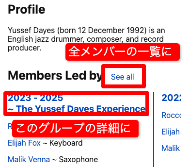
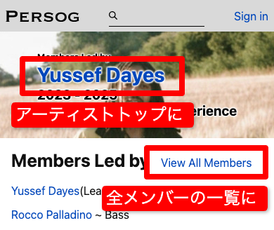
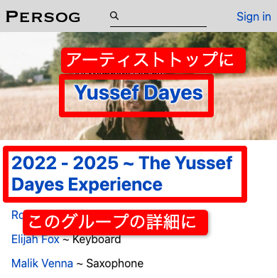

<ul>
  <li style="
    font-size:2.0rem;
    list-style: none;
    margin-right:32px;
    padding:16px 32px 16px 24px;
    border:5px solid #999;
    border-radius: 16px;
    ">
    ジャズを中心としたアーティストの共演関係を構造的に可視化・記録するアーカイブサービスです。<br>

音楽文化は、音源や映像だけではなく、アーティスト同士の即興的な対話や、ライブ現場の体験に根ざしています。<br>
しかし、そうした「つながり」や「瞬間」は断片的にしか残されず、検索ではたどり着けないことも多くあります。<br>
AIと人が協力して、アーティストの共演相関図、活動年表、ライブ体験などを一つの場所に集約・構造化。<br>
ユーザー自身が情報を追加・共有することで、音楽の文脈と関係性を未来に残す「文化の地図」をともに作っていくことを目指しています。
  </li>
  <li style="font-size:1.0rem;list-style: none;margin:16px;color:#ff0000;font-weight:bold">
    赤枠がそのページで別のページへ移動できるリンクです。
  </li>
  <li style="font-size:4.0rem">
    <a href="yussef_accurate.html">🙋アーティストトップ👈👈👈</a>
  </li>
  <li style="list-style: none;">
    
  </li>
  <li style="font-size:4.0rem">
    <a href="member_all.html">🙋全メンバー一覧👈👈👈</a>
  </li>
  <li style="list-style: none;">
    
  </li>
  <li style="font-size:4.0rem">
    <a href="member_top.html">🙋メンバー詳細👈👈👈</a>
  </li>
  <li style="list-style: none;">
    
  </li>
  <li style="font-size:2.0rem;list-style: none;">
    <a href="https://docs.google.com/forms/d/e/1FAIpQLSfNIdXzPgHS7gjRCUfHn_zo1QJPJ9LQTwNPm5QDuRpcMicvtA/viewform?usp=header">
      🙇ご感想を教えてください🙇
      <br>
      🙇 We'd love to hear your thoughts 🙇
    </a>
  </li>

  
</ul>